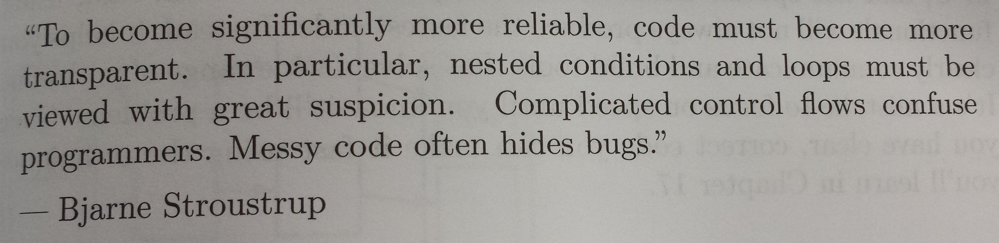

Chapter 3 R Basics
With over 10,000 packages on CRAN we can’t cover everything. In general there are several ways, or packages, to accomplish a given task.
Here is a quick look at some of the basics. Next we’ll dive deep into R’s basic data structures and how to subset them in subsequent chapters. This will give us a good overview of base R and the background needed to dive into R for Data Science.
The three most important functions in R ?, ??, and str:
?topicprovides access to the documentation for topic.??topicsearches the documention for topic.strdisplays the structure of an R object in human readable form.
See this vocabulary list for a good starting point on the basics functions in base R and some important libraries.
A book to learn the basics is R Programmig for Data Science
In R there three basic constructs; objects, functions, and environments:
3.1 Assignment Operators
We saw this is Coding Style. Use <- for assignment and use = for parameters. While you can use = for assignment it is generally considered bad practice.
3.2 Objects
3.2.1 Vector
You create a vector with c.
#> [1] "my" "first" "vector"#> [1] 3There are several shortcut functions for common vector creation.
#> [1] 2 3 4 5 6 7 8 9 10#> [1] 9 8 7 6 5 4 3#> [1] 1 4#> [1] 3 3 3 3#> [1] 1 0#> integer(0)#> [1] 2 3 4 5 6 7#> [1] 1 2 3 4 5 6 7#> [1] 1 2 3 4 5 6 73.2.2 Matrix
Matrices are 2D vectors, with all elements of the same type. Genearlly used for mathematics.
#> [,1] [,2] [,3] [,4]
#> [1,] 1 4 7 10
#> [2,] 2 5 8 11
#> [3,] 3 6 9 12#> [,1] [,2] [,3] [,4]
#> [1,] 1 2 3 4
#> [2,] 5 6 7 8
#> [3,] 9 10 11 12#> [,1] [,2] [,3]
#> [1,] 1 5 9
#> [2,] 2 6 10
#> [3,] 3 7 11
#> [4,] 4 8 12You find the dimensions of a matrix with nrow, ncol, and dim
#> [1] 4 3#> [1] 4#> [1] 33.2.3 List
A list is a generic vector containing other objects. These do NOT have to be the same type or the same length.
s <- c("aa", "bb", "cc", "dd", "ee")
b <- c(TRUE, FALSE, TRUE, FALSE, FALSE)
# x contains copies of n, s, b and our matrix from above
x <- list(n = c(2, 3, 5) , s, b, 3, m)
x#> $n
#> [1] 2 3 5
#>
#> [[2]]
#> [1] "aa" "bb" "cc" "dd" "ee"
#>
#> [[3]]
#> [1] TRUE FALSE TRUE FALSE FALSE
#>
#> [[4]]
#> [1] 3
#>
#> [[5]]
#> [,1] [,2] [,3]
#> [1,] 1 5 9
#> [2,] 2 6 10
#> [3,] 3 7 11
#> [4,] 4 8 12#> [1] 5We’ll discuss lists in detail in the next chapter.
3.2.4 Data frame
A data frame is a list with each vector of the same length. This is the main data structure used and is analagous to a data set in SAS. While these look like matrices they behave very different.
df = data.frame(n = c(2, 3, 5),
s = c("aa", "bb", "cc"),
b = c(TRUE, FALSE, TRUE),
y = v
) # df is a data frame
df#> n s b y
#> 1 2 aa TRUE my
#> 2 3 bb FALSE first
#> 3 5 cc TRUE vector#> [1] 3 4#> [1] 3#> [1] 4#> [1] 4We’ll discuss data frames in great detail in the next chapter.
3.3 Comparision
Logical Operators include:
| Operator | Description |
|---|---|
| > | greater than |
| >= | greater than or equal to |
| < | less than |
| <= | less than or equal to |
| == | exactly equal to |
| != | not equal to |
#> [1] 10 11 12Equality can be tricky to test for since real numbers can’t be expressed exactly in computers.
#> [1] 2#> [1] FALSE#> [1] 2.0000000000000004441#> [1] TRUE#> [1] "Mean relative difference: 0.5"#> [1] FALSE3.4 Logical and sets
x <- c(TRUE, FALSE)
df <- data.frame(expand.grid(x, x))
names(df) <- c("x", "y")
df$and <- df$x & df$y # logical and
df$or <- df$x | df$y # logical or
df$notx <- !df$x # negation
df$xor <- xor(df$x, df$y) # exlusive or
df#> x y and or notx xor
#> 1 TRUE TRUE TRUE TRUE FALSE FALSE
#> 2 FALSE TRUE FALSE TRUE TRUE TRUE
#> 3 TRUE FALSE FALSE TRUE FALSE TRUE
#> 4 FALSE FALSE FALSE FALSE TRUE FALSER has two versions of the logical operators & and && (| and ||). The single version is the vectorized version while the the double version returns a length-one vector. Use the double version in logical control structures (if, for, while, etc).
#> [1] TRUE FALSE#> [1] FALSE FALSE#> [1] TRUE#> [1] FALSE#> [1] TRUE TRUE#> [1] TRUE FALSE#> [1] TRUE#> [1] TRUEThis is a common source of bugs in control structures (if, for, while, etc) where you must have a single TRUE / FALSE.
Also, note that = is used for assignment and not comparison ==.
It also has useful helpers any and all
#> [1] TRUE#> [1] FALSE#> [1] TRUEAnd also some useful set operations intersect, union, setdiff, setequal
#> [1] 3 4 5#> [1] 1 2 3 4 5 6 7#> [1] 1 2 3 4 5 3 4 5 6 7#> [1] 1 2#> [1] 6 7#> [1] FALSE#> [1] TRUE3.5 Control Structures
Control structures allow you to put some “logic” into your R code, rather than just always executing the same R code every time. Control structures allow you to respond to inputs or to features of the data and execute different R expressions accordingly.
Commonly used control structures are
ifandelse: testing a condition and acting on itfor: execute a loop a fixed number of timeswhile: execute a loop while a condition is truerepeat: execute an infinite loop (mustbreakout of it to stop)break: break the execution of a loopnext: skip an interation of a loop
3.5.1 if-else
The if-else combination is probably the most commonly used control
structure in R (or perhaps any language). This structure allows you to
test a condition and act on it depending on whether it’s true or
false.
For starters, you can just use the if statement.
The above code does nothing if the condition is false. If you have an
action you want to execute when the condition is false, then you need
an else clause.
You can have a series of tests by following the initial if with any
number of else ifs.
3.5.2 for Loops
For loops are pretty much the only looping construct that you will need in R. While you may occasionally find a need for other types of loops, in my experience doing data analysis, I’ve found very few situations where a for loop wasn’t sufficient.
In R, for loops take an interator variable and assign it successive values from a sequence or vector. For loops are most commonly used for iterating over the elements of an object (list, vector, etc.)
The following three loops all have the similar behavior.
#> [1] "a"
#> [1] "b"
#> [1] "c"
#> [1] "d"The seq_along() function is commonly used in conjunction with for
loops in order to generate an integer sequence based on the length of
an object (in this case, the object x).
#> [1] "a"
#> [1] "b"
#> [1] "c"
#> [1] "d"It is not necessary to use an index-type variable.
#> [1] "a"
#> [1] "b"
#> [1] "c"
#> [1] "d"Try these examples above but with x <- NULL and notice the difference in behavior.
Nested loops are commonly needed for multidimensional or hierarchical data structures (e.g. matrices, lists). Be careful with nesting though. Nesting beyond 2 to 3 levels often makes it difficult to read/understand the code. If you find yourself in need of a large number of nested loops, you may want to break up the loops by using functions (discussed later).
3.5.3 while Loops
While loops begin by testing a condition. If it is true, then they execute the loop body. Once the loop body is executed, the condition is tested again, and so forth, until the condition is false, after which the loop exits.
#> [1] 0
#> [1] 1
#> [1] 2
#> [1] 3
#> [1] 4
#> [1] 5
#> [1] 6
#> [1] 7
#> [1] 8
#> [1] 9While loops can potentially result in infinite loops if not written properly. Use with care!
Sometimes there will be more than one condition in the test.
z <- 5
set.seed(1)
while(z >= 3 && z <= 10) {
coin <- rbinom(1, 1, 0.5)
if(coin == 1) { ## random walk
z <- z + 1
} else {
z <- z - 1
}
}
print(z)#> [1] 2Conditions are always evaluated from left to right. For example, in
the above code, if z were less than 3, the second test would not
have been evaluated.
3.5.4 repeat Loops
repeat initiates an infinite loop right from the start. These are
not commonly used in statistical or data analysis applications but
they do have their uses. The only way to exit a repeat loop is to
call break.
One possible paradigm might be in an iterative algorith where you may be searching for a solution and you don’t want to stop until you’re close enough to the solution. In this kind of situation, you often don’t know in advance how many iterations it’s going to take to get “close enough” to the solution.
x0 <- 1
tol <- 1e-8
repeat {
x1 <- computeEstimate()
if(abs(x1 - x0) < tol) { ## Close enough?
break
} else {
x0 <- x1
}
}Note that the above code will not run if the computeEstimate()
function is not defined (I just made it up for the purposes of this
demonstration).
The loop above is a bit dangerous because there’s no guarantee it will ever stop. You could get in a situation where the values of x0 and x1
oscillate back and forth and never converge. Better to set a hard
limit on the number of iterations by using a for loop and then
report whether convergence was achieved or not.
3.5.5 next, break
While not used very often it’s nice to know about these.
next is used to skip an iteration of a loop.
break is used to exit a loop immediately, regardless of what
iteration the loop may be on.
3.5.6 Looping
For loops are so common that that R has some functions which implement looping in a compact form to make your life easier. For a more in depth look see this
applyis generic: applies a function to a matrix’s rows or columns (or, more generally, to dimensions of an array)lapplyis a list apply which acts on a list or vector and returns a list.sapplyis a simple lapply but defaults to returning a vector (or matrix) if possible.vapplyis a verified apply. This is a sapply with the return object type prespecified.rapplyis a recursive apply for nested lists, i.e. lists within liststapplyis a tagged apply where the tags identify the subsets to apply a functionmapplyis a multivariabe apply for functions that have multiple arguments.Mapis a wrapper to mapply with SIMPLIFY = FALSE, so it is guaranteed to return a list.replicateis a wrapper around sapply for repeated evaluation of an expression
#> [,1] [,2] [,3] [,4]
#> [1,] 1 5 9 13
#> [2,] 2 6 10 14
#> [3,] 3 7 11 15
#> [4,] 4 8 12 16#> [1] 1 2 3 4#> [1] 4 8 12 16If you want row/column means or sums for a 2D matrix, be sure to investigate the highly optimized, lightning-quick colMeans, rowMeans, colSums, rowSums.
#> $a
#> [1] 1
#>
#> $b
#> [1] 1 2 3
#>
#> $c
#> [1] 10 11 12 13 14 15 16 17 18 19 20 21 22 23 24 25#> $a
#> [1] 1
#>
#> $b
#> [1] 3
#>
#> $c
#> [1] 16#> a b c
#> 1 3 16#> a b c
#> 1 3 16x <- 1:20
y <- factor(rep(letters[1:5], each = 4)) # a vector of the same length as x
tapply(x, y, sum) #> a b c d e
#> 10 26 42 58 74#> [1] 3 6 9 12 15#> [1] 0.009560203 -0.082577193 0.032326586 0.192819739 -0.432339116tapply is in a simalar spirit to a common data analysis paradigm called split-apply-combine where we split our data set based on a group, apply a function or code to it, and combine the results back together. We will revisit this paradigm in greater detail when we get to R for Data Science.
3.6 Vectorization & Recycling
Many operations in R are vectorized, meaning that operations occur in parallel in certain R objects. This allows you to write code that is efficient, concise, and easier to read than in non-vectorized languages.
The simplest example is when adding two vectors together.
#> [1] 12 14 16In most other languages you would have to do something like
#> [1] 12 14 16We saw a a form of vectorization above in the logical operators.
#> [1] 1 2 3#> [1] FALSE FALSE TRUE#> [1] 3Matrix operations are also vectorized, making for nice compact notation. This way, we can do element-by-element operations on matrices without having to loop over every element.
#> [,1] [,2]
#> [1,] 1 3
#> [2,] 2 4#> [,1] [,2]
#> [1,] 10 10
#> [2,] 10 10#> [,1] [,2]
#> [1,] 10 30
#> [2,] 20 40#> [,1] [,2]
#> [1,] 0.1 0.3
#> [2,] 0.2 0.4#> [,1] [,2]
#> [1,] 40 40
#> [2,] 60 60R also recyles arguments.
#> [1] 1.1 2.1 3.1 4.1 5.1 6.1 7.1 8.1 9.1 10.1While you usually either want the same length vector or a length one vector. You are not limited to just these options.
#> [1] 1.1 2.2 3.1 4.2 5.1 6.2 7.1 8.2 9.1 10.2#> Warning in x + c(0.1, 0.2, 0.3): longer object length is not a multiple of shorter object length#> [1] 1.1 2.2 3.3 4.1 5.2 6.3 7.1 8.2 9.3 10.13.6.1 Example
One (not so good) way to estimate pi is through Monte-Carlo simulation.
Suppose we wish to estimate the value of pi using a Monte-Carlo method. Esentially, we throw darts at the unit square and count the number of darts that fall within the unit circle. We’ll only deal with quadrant one. Thus the \(Area = \frac{\pi}{4}\)
Monte-Carlo psuedo code:
- Initalize
hits = 0 - for i in 1:N
- Generate two random numbers, \(U_1\) and \(U_2\), between 0 and 1
- If \(U_1^2 + U_2^2 < 1\), then
hits = hits + 1 - end for
- Area estimate =
hits / N - \(\hat{pi} = 4 * Area Estimate\)
pi_naive <- function(N) {
hits <- 0
for(i in seq_len(N)) {
U1 <- runif(1)
U2 <- runif(1)
if ((U1^2 + U2^2) < 1) {
hits <- hits + 1
}
}
4*hits/N
}
N <- 1e6
system.time(pi_naive(N))#> user system elapsed
#> 3.29 0.00 3.33That’s a long runtime (and bad estimate). Let’s vecrtorize it.
pi_vect <- function(N) {
U1 <- runif(N)
U2 <- runif(N)
hits <- sum(U1^2 + U2^2 < 1)
4*hits/N
}
system.time(pi_vect(N))#> user system elapsed
#> 0.200 0.011 0.2113.7 Function Basics
To understand computations in R, two slogans are helpful:
- Everything that exists is an object.
- Everything that happens is a function call.
John Chambers
Functions in R are “first class objects”, which means that they can be treated much like any other R object. Importantly,
Functions can be passed as arguments to other functions. This is very handy for the various apply functions, like
lapply()andsapply().Functions can be nested, so that you can define a function inside of another function
If you’re familiar with common language like C, these features might appear a bit strange. However, they are really important in R and can be useful for data analysis.
Messy code hides bugs

- Functions are a means of abstraction. A concept/computation is encapsulated/isolated from the rest with a function.
- Functions should do one thing, and do it well (compute, or plot, or save, … not all in one go).
- Side effects: your functions should not have any (unless, of course, that is the main point of that function - plotting, write to disk, …). Functions shouldn’t make any changes in any environment. The only return their output.
- Do not use global variables. Everything the function needs is being passed as an argument. Function must be self-contained.
- Function streamline code and process
From the R Inferno:
Make your functions as simple as possible. Simple has many advantages:
- Simple functions are likely to be human efficient: they will be easy to understand and to modify.
- Simple functions are likely to be computer efficient.
- Simple functions are less likely to be buggy, and bugs will be easier to fix.
- (Perhaps ironically) simple functions may be more general—thinking about the heart of the matter often broadens the application.
Functions can be
- Correct.
- An error occurs that is clearly identified.
- An obscure error occurs.
- An incorrect value is returned.
We like category 1. Category 2 is the right behavior if the inputs do not make sense, but not if the inputs are sensible. Category 3 is an unpleasant place for your users, and possibly for you if the users have access to you. Category 4 is by far the worst place to be - the user has no reason to believe that anything is wrong. Steer clear of category 4.
Finally, functions are
- Easier to debug
- Easier to profile
- Easier to parallelise
Functions are an central part of robust R programming and we will spend a significant amount of time writing functions.
3.7.1 Your First Function
All R functions have three parts:
the
body(), the code inside the function.the
formals(), the list of arguments which controls how you can call the function.the
environment(), the “map” of the location of the function’s variables.
When you print a function in R, it shows you these three important components. If the environment isn’t displayed, it means that the function was created in the global environment.
myadd <- function(x, y) {
cat(paste0("x = ", x, "\n"))
cat(paste0("y = ", y, "\n"))
x + y
}
myadd(1, 3) # call by position#> x = 1
#> y = 3#> [1] 4#> x = 1
#> y = 3#> [1] 4#> x = 1
#> y = 3#> [1] 4- The body of the function is everything between the
{ }. Note this does the computation AND returns the result. xandyare the arguments to the function.- the environment this function lives in is the global environement. (We’ll discuss environments more in the next section.)
Even though it’s legal, I don’t recommend messing around with the order of the arguments too much, since it can lead to some confusion.
You can also specify default values for your arguments. Default values should be the values most often used. rnorm uses the default of mean = 0 and sd = 1. We usually want to sample from the standard normal distribution, but we are not forced to.
myadd2 <- function(x = 3, y = 0){
cat(paste0("x = ", x, "\n"))
cat(paste0("y = ", y, "\n"))
x + y
}
myadd2() # use the defaults#> x = 3
#> y = 0#> [1] 3#> x = 1
#> y = 0#> [1] 1#> x = 3
#> y = 1#> [1] 4#> x = 1
#> y = 1#> [1] 2By defualt the last line of the function is returned. Thus, there is no reason to explicitly call return, unless you are returning from the function early. Inside functions use stop to return error messages, warning to return warning messages, and message to print a message to the console.
f <- function(age) {
if (age < 0) {
stop("age must be a positive number")
}
if (age < 18) {
warning("Check your data. We only care about adults.")
}
message(paste0("Your person is ", age, " years old"))
invisible()
}
f(-10)#> Error in f(-10): age must be a positive number#> Warning in f(10): Check your data. We only care about adults.#> Your person is 10 years old#> Your person is 30 years old3.7.2 Lazy Evaluation
R is lazy. Arguments to functions are evaluated lazily, that is they are evaluated only as needed in the body of the function.
In this example, the function f() has two arguments: a and b.
#> [1] 4#> [1] 4This function never actually uses the argument b, so calling f(2) or f(2, 1) will not produce an error because the 2 gets positionally matched to a. This behavior can be good or bad. It’s common to write a function that doesn’t use an argument and not notice it simply because R never throws an error.
3.7.3 The ... Argument
There is a special argument in R known as the ... argument, which indicate a variable number of arguments that are usually passed on to other functions. The ... argument is often used when extending another function and you don’t want to copy the entire argument list of the original function
For example, a custom plotting function may want to make use of the default plot() function along with its entire argument list. The function below changes the default for the type argument to the value type = "l" (the original default was type = "p").
myplot <- function(x, y, type = "l", ...) {
plot(x, y, type = type, ...) ## Pass '...' to 'plot' function
}The ... argument is also necessary when the number of arguments passed to the function cannot be known in advance. This is clear in functions like paste() and cat().
#> function (..., sep = " ", collapse = NULL)
#> NULL#> function (..., file = "", sep = " ", fill = FALSE, labels = NULL,
#> append = FALSE)
#> NULLBecause both paste() and cat() print out text to the console by combining multiple character vectors together, it is impossible for those functions to know in advance how many character vectors will be passed to the function by the user. So the first argument to either function is ....
One catch with ... is that any arguments that appear after ... on the argument list must be named explicitly and cannot be partially matched or matched positionally.
Take a look at the arguments to the paste() function.
#> function (..., sep = " ", collapse = NULL)
#> NULLWith the paste() function, the arguments sep and collapse must be named explicitly and in full if the default values are not going to be used.
3.8 Environments & Scoping
An environment is a collection of (symbol, value) pairs, i.e. x is a symbol and 3.14 might be its value. Every environment has a parent environment and it is possible for an environment to have multiple “children”. The only environment without a parent is the empty environment.
Scoping is the set of rules that govern how R looks up the value of a symbol. In the example below, scoping is the set of rules that R applies to go from the symbol x to its value 10:
#> [1] 10R has two types of scoping: lexical scoping, implemented automatically at the language level, and dynamic scoping, used in select functions to save typing during interactive analysis. We discuss lexical scoping here because it is intimately tied to function creation. Dynamic scoping is an advanced topic and is discussed in Advanced R.
How do we associate a value to a free variable? There is a search process that occurs that goes as follows:
If the value of a symbol is not found in the environment in which a function was defined, then the search is continued in the parent environment. The search continues up the sequence of parent environments until we hit the top-level environment; this usually the global environment (workspace) or the namespace of a package. After the top-level environment, the search continues down the search list until we hit the empty environment. If a value for a given symbol cannot be found once the empty environment is arrived at, then an error is thrown.
x <- 0
f <- function(x = -1) {
x <- 1
y <- 2
c(x, y)
}
g <- function(x = -1) {
y <- 1
c(x, y)
}
h <- function() {
y <- 1
c(x, y)
}What do the following return?
f()g()h()g(h())f(g())g(f())
Unlike most languages you can define a function within a function. This nested function only lives inside the parent function.
#> function(x) {
#> x^n
#> }
#> <environment: 0x7f9ea3718988>#> Error in pow(x = 4): could not find function "pow"3.9 Assignment
- Browse this vocabulary list and read the help file for functions that interest you.
- Vectorization / function practice.
We’ll calcualte pi using the Gregory-Leibniz series. Mathematicians will be quick to point out that this is a poor way to calculate pi, since the series converges very slowly. But our goal is not calculating pi, our goal is examining the performance benefit that be be achieved using vectorization.
Here is a formula for the Gregory-Leibniz series:
\[\begin{equation} 1 - 1/3 + 1/5 - 1/7 + 1/9 - ... = \frac{\pi}{4} \end{equation}\]Here is the Gregory-Leibniz series in summation notation:
\[\begin{equation} \sum_{\text{n}=0}^{\infty} \frac{(-1)^n}{2\cdot n + 1} = \frac{\pi}{4} \end{equation}\]The straightforward implementation using an R loop would look like this:
GL_naive <- function (limit) {
p = 0
for (n in 0:limit) {
p = (-1)^n/(2 * n + 1) + p
}
4*p
}
N <- 1e7
system.time(pi_est <- GL_naive(N))#> user system elapsed
#> 0.872 0.004 0.879#> [1] 3.141593Your task is to vectorize this function. Do not use any looping or apply functions. This one is a bit tricky. Hint: It may be easier to think about it in terms of the series notation and not the summation notation.